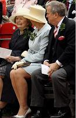
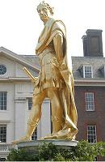

The Drowning of Care
Le remède à l'inquiétude
A Medley in four Airs for the Twenty-Ninth of May
Un pot-pourri de 4 airs pour le 29 mai
from the
"True Loyalist"
, page 17, 1779
and
Hogg's "Jacobite Relics" 1st Series
N°8, page 13, 1819
Tunes - Mélodies
"The Drowning of Care"
Sequenced by Christian Souchon
|
To the tunes:
James Hogg writes: "I had this song from the same source with the preceding three and it is likewise to be found in the same Scottish work with the latter of these; at least, so I am informed . The airs in this are all Scottish, but cannot be said to be Jacobite airs. The poetry is apparently from the same hand with the foregoing and is highly respectable for the age". The three songs mentioned are The Restoration (The 29th May), The Royal Oak Tree and Tree of Friendship . The "Scottish work" is the "True Loyalist" and we may infer from Hogg's remark that he had heard of this collection but did not possess a copy of it. The Yellow-haired Laddie (c. 1724): click here . Once I was blind : A church hymn with the same burden, titled "The Light of the World is Jesus", was composed by the American hymn writer and singer Philip P. Bliss (1838 - 1876), the author of " A Choice Collection Of Hymns And Tunes" (1874, where the term "Gospel song" first appears). The tune is also ascribed to him but, astonishingly, it perfectly tallies with the present lyrics composed latest in 1779. A curious instance of "plagiarism by anticipation"! Here is the 1st stanza of Bliss's hymn: The whole world was lost in the darkness of sin; The light of the world is Jesus; Like sunshine at noonday His glory shone in, The light of the world is Jesus. Chorus Come to the Light, 'tis shining for thee; Sweetly the Light has dawned upon me; Once I was blind, but now I can see; The light of the world is Jesus. The Lass of Patie's Mill (1724): A highly popular, enduring favourite song air in the 18th and early 19th century, and indeed, it can be found in a variety of older publications throughout Britain and Ireland. Many sources attribute the song to Allan Ramsay , a Scot, who mentioned his own song in his ballad opera "The Gentle Shepherd" published (though not performed) in 1725, but who published the song in his "Tea-Table Miscellany" (1724-27). The song also appears in Thomson's "Orpheus Caledonius" editions of 1725 (No. 1) who credits the tune to David Rizzio, a secretary to Queen Mary, but Thomson removed the ascription in laters edition of his work. According to Robert Burns, Ramsay was prompted by the John Earl of Loudon to compose this song as they were riding together and passed a spot on Irwine water, called Patie's Mill. The original song reads: The lass o' Patie's mill, Sae bonnie, blythe and gay, In spite of a' my skill, She stole my heart away. etc. Source "The Fiddler's Companion" (cf. Liens). Let our Mirth still abound : is the name of a song also titled "Prince of Orange Rant" or "Killycrankie". Among the several versions of "Killiecrankie", "Planxty Davis" (1698) matches best the present lyrics. |
A propos des mélodies:
James Hogg écrit: "Ce chant provient de la même source que les trois précédents et figure également dans le même ouvrage écossais que le dernier, c'est du moins ce qu'on m'assure . Les airs qu'il utilise sont tous écossais. Le texte est, me semble-t-il, du même auteur que le précédent, et d'un âge fort respectable." Les trois chants dont il parle sont La Restauration (Le 29 mai), Le Chêne royal et L'Arbre de l'amitié . Quant à l'"ouvrage écossais" il s'agit du "Vrai Loyaliste" dont on voit que Hogg le connaissait de nom, mais n'en possédait pas d'exemplaire. Le garçon aux cheveux blonds (c. 1724): cliquer ici . J'étais aveugle : Un cantique comprenant ce refrain, intitulé "Jésus est la lumière du monde", fut composé par le musicien-chanteur américain Philip P. Bliss (1838 - 1876), l'auteur du " Recueil choisi de cantiques et mélodies" (1874) où apparaît pour la première fois le terme "Gospel song" ("chant tiré de l'Evangile"). On lui impute aussi la mélodie, laquelle s'adapte étonnamment au texte du présent chant composé au plus tard en 1779. Un cas intéressant de "plagiat par anticipation"! Voici la 1ère strophe du cantique de Bliss: Univers perdu dans la nuit du péché, La lumière luit, c'est Jésus Soleil au zénith, sa gloire resplendit, Oui, cette lumière c'est Jésus. Refrain Approche, la lumière est pour toi; Douce aube qui luit autour de moi; J'étais aveugle, à présent je vois; Lumière du monde est Jésus. The Lass of Patie's Mill (1724): Voila un air qui a eu la faveur du public au cours des 18ème et au 19ème siècles et que l'on trouve, de ce fait, dans un grand nombre de recueils tant britanniques qu'irlandais. Plusieurs sources attribuent le chant à l'Ecossais Allan Ramsay , qui cite son propre chant dans son "ballad opera", le "Gentil Berger", publié, mais non joué, en 1725, avant de le faire paraître dans ses "Miscellanées de la Table de Thé " (1724-27). Le chant figure également dans l'"Orphée Calédonien" de Thomson, éditions de 1725 (N°1). Thomson y attribue la mélodie à David Rizzio, secrétaire de la reine Marie, avant de se rétracter dans une édition ultérieure de son œuvre. Selon Robert Burns, le chant avait été suggéré à Ramsay par le comte John de Loudon, au cours d'une promenade à cheval qu'ils firent ensemble près de la rivière Irwine, au lieu-dit "Patie's Mill". Le chant original commence ainsi: Cette jeune fille de Patie's Mill Si jolie, si pimpante, si charmante, Malgré mon expérience, se peut-il Qu'elle m'ait ravi mon cœur, la méchante? etc. Source "The Fiddler's Companion" (cf. Liens). Que coulent des flots de gaîté! : est le titre d'un chant également connu comme "Le charivari du Prince d'Orange" ou "Killycrankie". Parmi les diverses versions de "Killiecrankie", c'est "Planxty Davis" (1698) qui va le mieux avec les paroles du présent chant. |

|
THE DROWNING OF CARE
A MEDLEY IN FOUR AIRS FOR THE TWENTY-NINTH OF MAY Air I.— Tune,« The Yellow-hair'd Laddie" 1. Though winter may fright us, and chill us with cold. (twice) Bright Phoebus can cheer us with rays pure as gold ; Then let us not murmur, nor dare to complain. For he that took sunshine can give it again. [1] (twice) 2. The oak [2], that all winter was barren and bare. Again spreads his branches to wave in the air ; All nature, rejoicing, appears clad in green ; Then let mirth and friendship enliven the scene. 3. The true Sons of Freedom [3] together are met. And each by his neighbour in order is set ; While mirth and true friendship give life to the song. The voice of Contentment the notes shall prolong. Air II.- Tune "Once I was blind." 1. A lady once her husband lost. And, sighing, look'd around. And saw her children sadly cross'd. And deep in sorrow drowned. But thus assuaged their grief and pain "Your father will return again" With my fall, la, &c. With my fall, la, &c. 2. Though he has left you for a day Be not sunk in despair, For orphans, as the Scriptures say, Are Heav'n's peculiar care : Then fear not Boys, you'll get command "As broken a ship has come to land. With my fall, la, &c. 3. Then throw your grief and care away. Let mirth your hours employ. This is the twenty Ninth of May, My heart o'erflows with joy ! So bid adieu to grief and pain, And drink the Laird's return again ! With my fall, la, &c. 4. The lads took hearty and dressed themselves In rural garments gay [4]. And round about, like fairy elves, They danced the live-long day ; Around, around an oaken tree. They danced with joy, and so do we, With my fall, la, &c. Air III.- Tune "The Lass of Patie's Mill" The sprightly dance now done. They all, as was their use. Upon the grass sat down, To taste the balmy juice: (twice) The sparkling goblet smiled, And went the circle round. While Mirth (Contentment's child) Cried "Care in joy is drowned." (twice) Air IV.— Tune "Let our mirth still abound." Let us, as well as they, be merry while we may. For we know not how long we may sing, brave boys! Let us still be content with whatever is sent. Or what providence pleases to bring, brave boys ! For I love, from my soul, a friend and a bowl, So here goes a health to our king, brave boys! CHORUS Here's a health to the King! Let every true man sing Long live our noble King! (twice) [5] Source: "The True Loyalist; or, Chevaliers's Favourite: being a collection of elegant songs, never before printed. Also several other loyal compositions, wrote by eminent hands." Printed in the year 1779. |
LE REMEDE A L'INQUIETUDE
UN POT-POURRI POUR LE VINGT-NEUF MAI Air I: "Le garçon aux cheveux blonds" 1. Après l'hiver et ses rigueurs et cette froide torpeur qui nous transit, L'éclatant Phébus sourit et dispense sa chaleur. (bis) A quoi bon le Ciel agonir de vains soupirs ou de vaines plaintes? L'obscurité qui causait nos craintes, nous la verrons s'évanouir. (bis) [1] 2. Le chêne [2] qui fut tout l'hiver de feuillage vert privé, le voilà donc Avec ses frondaisons qui se balancent dans l'air. Et la nature à nouveau sourit d'être aujourd'hui dans sa robe verte, La concorde et la joie se concertent pour rendre ces lieux plus exquis. 3. Les vrais fils de la Liberté [3] se sont rassemblés à l'appel du printemps, Et chacun a pris place près des amis d'antan. Car c'est l'amitié, comme la joie, qui prêtent leur voix à nos cantilènes, Qu'en cet instant se taisent les thrènes, place aux chants de contentement! Air II: "J'étais aveugle"; 1. La dame qui se retrouve sans mari Voit autour de la table Tous ses enfants l'un contre l'autre blottis: Le chagrin les accable. Elle les console par ces mots: "Votre père reviendra bientôt!" Sur l'air du tra, la, la, la, la Sur l'air du tra la laire! 2. S'il vous a laissés, ce n'est que pour un jour. Point de désespérance Selon les Ecritures le Ciel est pour Vous plein de bienveillance. Ne craignez rien! Vous verrez encor, Brisée, la nef rejoindre le port. Sur l'air du tra, la, la etc. 3. Il convient donc de ne pas pleurer, Mais bien plutôt de rire Car aujourd'hui, c'est le vingt-neuf mai Mon coeur de joie s'enivre! Adieu la peine, adieu la douleur! A la santé de notre seigneur! Sur l'air du tra, la, la etc. 4. Les garçons rassurés se sont habillés De cotillons de laine [4] Et comme des feux-follets ils ont dansé Alors autour du chêne; C'est autour du chêne, tout le jour. Qu'il nous faut danser à notre tour. Sur l'air du tra, la, la etc. Air III: "La fille de Patie's Mill" Quand la joyeuse danse fut enfin, Terminée, comme c'est l'usage, Pour déguster un flacon de bon vin Ils se sont installés parmi l'herbage. (bis) Chacun, lorsque à la coupe étincelante il sourit, Tandis que de l'un à l'autre elle passe, Rempli d'une joie toute enfantine, dit: "Devant la joie notre chagrin s'efface!" (bis) Air IV: "Que la gaîté coule à flots" Amis, soyons comme eux, joyeux tant que l'on peut, Car qui sait si nous coulerons longtemps des jours heureux! Jouissons de ce que nous envoie la destinée Et des faveurs à nous par la Providence accordées! De toute mon âme, j'aime mon prochain et le vin, Et je veux boire à la santé de notre souverain! CHOEUR A la santé du Roi, Sujet loyal, tu bois! Longtemps encor que Dieu le protège! (bis) [5] (Trad. Christian Souchon (c) 2011) |
|
[1]
Though winter may fright us
: While the day chosen to commemorate the restoration of the English monarchy in 1660 was the King Charles II's birthday, on 29th of May, this new holiday seems to have replaced prior traditions, like the "Garland King" in Castleton, featuring a rider decked out in greenery marching down the streets. All these traditions and events were in keeping with the pagan spring and nature festivals that can be traced all over Europe. They had nearly died out in Britain, a victim to Oliver Cromwell's fanatical puritanism.
Some names of the 29th May festival ( Royal Oak Day ) clearly hint at this pagan origin: "Oak Apple Day", "Arbour Day" and the mysterious "Shick-Shack Day" ... An "oak apple" is a mutation of an oak leaf caused by chemical injected by the larva of the " common oak gall wasp" (cynips quercufolii). The spherical gall, normally 2 cm in diameter, resembles an apple on the underside of oak leaves. [2] The oak : the reference is to the oak-tree in whose branches the future king Charles II hid in Boscobel Garden (see The Royal Oak Tree .  [3] The true sons of Liberty : After Cromwell's death the English Parliament asked Charles to come back from France. He arrived in London on his 30th birthday, on 29th May 1660. The 29th May was designated "Royal Oak Day" by Act of Parliament ordering it to be kept as a day of thanksgiving for the restoration of monarchy. For hundreds of years, those who refused to wear an oak sprig on that day were set upon, they could, for instance, be stung by children with nettles. Many anti-monarchists took up the nettle as their own anti-monarchist symbol on the 29th of may.[4] Rural garments : After the battle of Worcester (3rd September 1651), Charles, in spite of a reward of £1,000 declared by England's Parliament on his head, could arrive at Boscobel House, 50 miles from the battlefield, where Richard Pendrill, a Royalist, disguised the King in the clothes of a woodman. [5] Long live the King! : The word "King" is ambiguous. After 1714 with the succession of George I (who incidentally was born on 28 May 1660), the oak became associated with the Jacobites, like in the present song, and thus became a symbol of national division. The first Liberal government abolished therefore the celebration in 1859 to the annoyance of children who lost a day away from school and circulated a new rhyme: ‘Twenty ninth of May Royal Oak Day If you don’t give us a holiday We’ll all run away’ |
[1]
Après l'hiver et ses rigueurs
: Bien que le jour choisi pour célébrer la restauration de la monarchie en Angleterre en 1660 soit l'anniversaire du roi Charles II, le 29 mai, il semble remplacer des fêtes plus anciennes, comme celle du "Roi des guirlandes", célébrée à Castleton, où l'on voit un cavalier recouvert de feuillages parcourir les rues. Toutes ces traditions sont en rapport avec les fêtes païennes de la nature et du printemps dont on trouve des traces partout en Europe. Elles avaient pratiquement disparu d'Angleterre, victimes du puritanisme forcené de Cromwell. Certains noms de la fête du 29 mai (
Fête du Chêne Royal
) font clairement allusion à cette origine païenne:
"Fête des galles du chêne", "Fête des charmilles"
et le mystérieux
"Shick-Shack Day"
...
La "galle du chêne" est une excroissance qui vient sous les feuilles de cet arbre à la suite de la piqûre d'une guêpe (cynips) qui y dépose ses œufs. La galle est une sphère d'un diamètre de 2 cm qui fait penser à une pomme. [2] Le chêne : allusion au chêne dont les branches dissimulèrent le roi Charles II à Boscobel (cf. Le chêne royal .  [3] Les vrais fils de la Liberté : Après la mort de Cromwell, le parlement anglais demanda à Charles de rentrer de France. Il arriva à Londres le jour de son 30ème anniversaire, le 29 mai 1660. Le 29 mai sous le nom de "Journée du Chêne royal" devint par décision du parlement un jour d'action de grâce pour la restauration de la monarchie. Pendant plusieurs siècles, ceux qui refusaient d'arborer un rameau de chêne ce jour-là, s'exposaient à des sévices, par exemple à être frottés avec des orties par les enfants. Beaucoup de républicains arborèrent l'ortie, le 29 mai, comme symbole de leurs convictions.[4] Cotillons de laine : Après la défaite de Worcester (3 sept. 1651), Charles, malgré la récompense de 1.000 livres promise pour sa capture par le parlement anglais, parvint jusqu'à Boscobel House à 80 km du champ de bataille, où le royaliste Richard Pendrill lui donna de quoi s'habiller en bûcheron. [5] Dieu protège le Roi! : le mot "roi" est à double sens. Après 1714. Lors de l'accession au trône de George I (né le 28 mai 1660, par parenthèses), le chêne devint un symbole Jacobite, comme dans le présent chant et, de ce fait, un signe de division. Quand les Libéraux arrivèrent au pouvoir, en 1859, ils abolirent cette fête. Les enfants, privés d'un jour sans écoles, créèrent alors la comptine: "Vingt-neuf mai Jour du Chêne. Donnez-nous un jour férié Sinon, tous vont se sauver." |